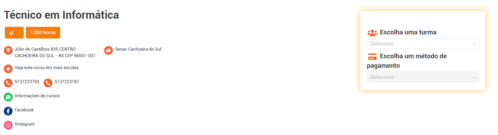

Você busca uma oportunidade de inserção no mercado de trabalho? A área de Informática fascina você? Gostaria de
agregar conhecimentos fundamentais para os mais diversos segmentos profissionais? Se as respostas forem sim, o
curso Técnico em Informática do Senac-RS foi feito para você!
A formação vai te preparar para fazer o planejamento e pela execução dos processos de manutenção de computadores
e pela operação de redes locais de computadores. Além de, desenvolver aplicativos computacionais, adotando
normas técnicas, de qualidade, de saúde, de segurança do trabalho e preservação ambiental no desempenho de sua
função.
Por meio de uma proposta pedagógica adequada às exigências do mundo profissional, o curso oferece nos momentos
presenciais* uma aprendizagem pautada por metodologias que propiciam atuação por projetos, aulas práticas,
teóricas, vivenciais e flexíveis com foco no mercado de trabalho. Mas também, momentos mediados por
tecnologia**, em uma plataforma educacional própria, com conteúdos produzidos por tutores altamente
qualificados. Ambos os modos estimulam você a experimentar habilidades necessárias para os profissionais do
futuro.
Acompanhe a distribuição da carga-horária do currículo:
Total de horas do curso: 1.200h
- Momentos presenciais*: 996h
- Momentos mediados por tecnologias com tutoria ativa**: 204h (no formato EAD - Educação a Distância)
Ao final da formação você estará apto a atuar em empresas de diversos segmentos, além de poder participar de
concursos em organizações públicas.
Gostou da ideia de ser um profissional completo da área de Informática? Venha para o curso Técnico em
Informática e mude de vida.
Cronograma
-
Planejar e executar a montagem de computadores;
-
Planejar e executar a instalação de hardware e software para computadores;
-
Planejar e executar a manutenção de computadores;
-
Planejar e executar a instalação de redes locais de computadores;
-
Planejar e executar a manutenção de redes locais de computadores;
-
Planejar e executar a instalação, a configuração e o monitoramento de sistemas operacionais de redes locais
(servidores);
-
Conceber, analisar e planejar o desenvolvimento de software;
-
Executar os processos de codificação, manutenção e documentação de aplicativos computacionais para desktop;
-
Executar os processos de codificação, manutenção e documentação de aplicativos computacionais para
dispositivos móveis;
-
Executar os processos de codificação, manutenção e documentação de aplicativos computacionais para internet;
-
Executar teste e implantação de aplicativos computacionais;
-
Desenvolver e organizar elementos estruturais de sites;
-
Manipular e otimizar imagens vetoriais, bitmaps gráficos e elementos visuais de navegação para web.